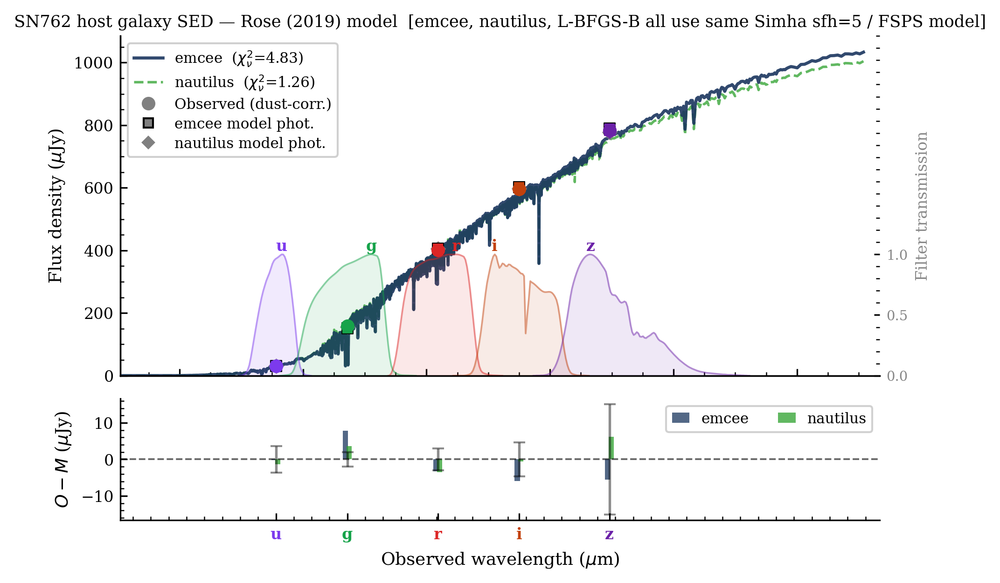
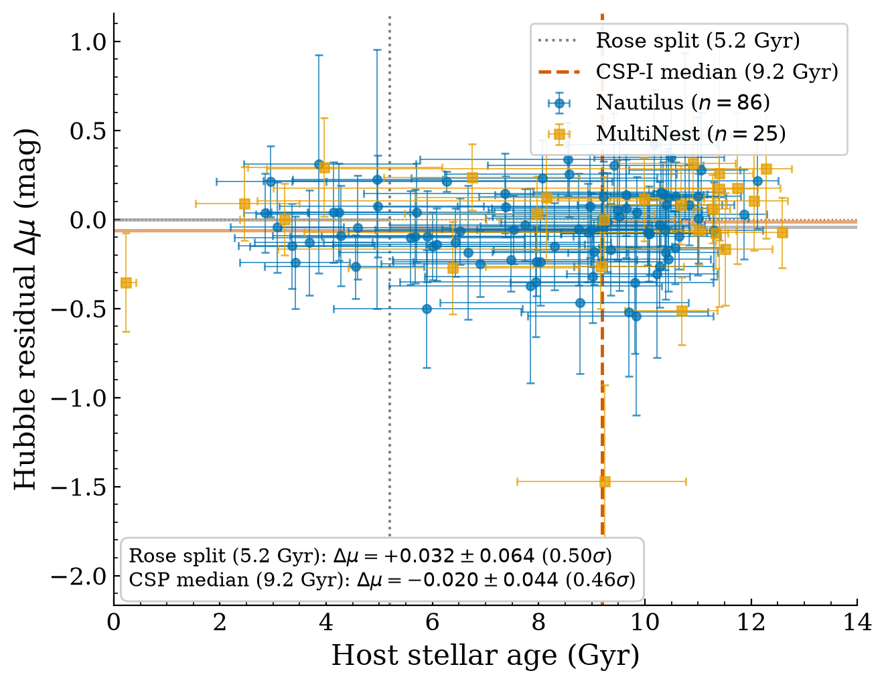

CASSA · Supernova Cosmology
Host-Galaxy Stellar Ages & the
Hubble-Residual Age Step in Type Ia Supernovae
Reproducing Rose (2019), and testing Son (2025) on independent Carnegie Supernova Project data
Deba Priyo Guha
Center for Astronomy, Space Science & Astrophysics (CASSA) · Independent University, Bangladesh
Supervisor: Dr. Syed Ashraf Uddin · ← → navigate · F fullscreen · Esc overview
📋 The whole story in one slide
Summary
🔧 Rose (2019)
the TOOL — his global-age method
🎯 Son (2025)
the TARGET — the claim we refute
👁️ Wiseman (2026)
the WITNESS — "dark energy is safe"
- Son: age bias so strong it kills dark energy 🎯
- …but he never tested it on independent data ⭐
- We reproduce Rose's global-age method 🔧
- We prove it is sampler-independent (→ Nautilus) 🧪
- We run it on independent CSP + NIR data 🔭
- The strong bias does not reproduce ✅
- Wiseman independently agrees: DE survives 👁️
- Tool (CANDLE) + three papers (P1/P2/P3) 📄
One line: Rose diye maapchi · Son-ke maarchi · Wiseman shakkhi dichhe. We oppose Son.
🎯 The claim we test
What Son (2025) Says
Claim: the host-age → Hubble-residual correlation is strong, robust & ubiquitous (≈ 5.5σ) in SDSS-II + SNLS → applied to DESI BAO it gives a decelerating Universe: "no dark energy." (Sah 2026 pushes further.)
⭐ But here is the crack — our reason to exist:
- Son brought no new data. He re-measured ages on the SAME samples as Rose (R19) + Gupta (G11).
- "Ubiquitous" was never tested on an independent survey.
- So: run Rose's method on data Son never touched — does the strong bias survive?
Why Rose, and Why Global Age
- Rose (2019) "Think Global, Act Local" — found a real host-age step ≈ 0.114 mag near ~8 Gyr.
- His mc-age pipeline (FSPS SED fitting) is exactly what we reproduce — no new recipe to blame.
- Global age = whole-galaxy (
campbellG) stellar age.
- Dr. Uddin's stance: the global host age is the physically correct metric.
Both Son and Rose ultimately work with global host ages — so the fight is not "global vs local." The real fight is the strength & ubiquity of the age–HR correlation.
🧠 Theory
How mc-age Works — the Theory
- Bayesian SED fitting. A galaxy's light across bands = its spectral energy distribution (SED).
- FSPS = forward model: parameters θ (age, τ, metallicity, dust, z) → predicted magnitudes.
- Likelihood = χ² between model and observed mags (weighted by errors). Closer fit → higher likelihood.
- Prior keeps θ physical; the sampler explores θ → the posterior on age.
Posterior ∝ Likelihood × Prior
P(θ | data) ∝ L(data | θ) · π(θ)
mass-weighted age:
tage = tuniv − ∫ t·ψ(t) dt ⁄ ∫ ψ(t) dt
ψ(t) = star-formation history. "Old belief (prior) + new evidence (likelihood) = updated belief (posterior)."
How mc-age Works — a Worked Example (SN762)
FSPS = the physics (given age/dust/metallicity → predicted brightness). The sampler = a hunter searching for the parameters that match.
SN762 observed (z=0.19139):
u=20.34 g=18.50 r=17.46 i=17.01 z=16.70
→ faint in blue (u), bright in red (z) = old, red host
- Try age = 2 Gyr → model too blue → rejected.
- Try age = 7 Gyr → model matches all 5 bands → fit!
- Output: host age ≈ 7 Gyr — an OLD host.

Best-fit model SED vs the 5 observed magnitudes
🧪 Robustness
Trouble in mc-age → Test Six Samplers
- emcee is slow: ~2.2 million FSPS evaluations per host → hours per SN.
- The worry: does the age change if we change the sampler? If yes, the result is fragile.
- So we run the same model (likelihood, priors, FSPS) with six engines and demand the same age.
emcee
Rose original
emcee-latest
modern rebuild
Nautilus
neural nested
MultiNest
ellipsoidal nested
dynesty
dynamic nested
BAGPIPES
different model
🧠 Theory
Nautilus — the Theory
- Nested sampling: scatter N "live points" across the prior; repeatedly drop the worst-fitting one and shrink the boundary inward.
- Like a nautilus shell 🐚 spiralling to its centre — the region collapses onto the best answer.
- Finds multimodal / bimodal peaks naturally (live points cover all peaks) — where emcee's random walk gets stuck on one.
The ML trick: Nautilus trains a small internal emulator on the live points to propose new points straight into the high-likelihood region. It does not deep-learn on data — it just speeds the search.
Bonus: a nested sampler returns the Bayesian evidence Z directly (for model comparison) — emcee cannot easily.
Why We Settled on Nautilus — the Race
- The race: same setup, 6 tools, one node — who converges the most hosts in 12 h?
- Nautilus = nested sampling + a small ML emulator (the "nautilus-shell" shrinking of ellipsoids). It does not train a neural net on data.
- SN762 single-object: Nautilus fastest in both — 0.32 h wall & 10.2 core-h — ~1.85× cheaper than MultiNest, ~60× cheaper than emcee.
- Throughput (6 cores, 12 h): Nautilus 11 vs MultiNest 9 hosts; emcee & dynesty finished 0.
Also wins on convergence (n_eff), calibrated errors, evidence & bimodal handling. Server: 32 cores, 16 memory channels → FSPS memory-bandwidth bound, sweet spot ≈16 parallel hosts.
Validation
Degeneracy, and Us vs Rose & Gupta
- The core difficulty: age–metallicity–dust are degenerate — an old metal-poor galaxy can mimic a young dusty one. (Spectroscopy or NIR is needed to break it.)
- Campbell (SDSS) vs us: ages track 1:1 across all samplers.
- vs Rose (98 hosts): +0.64 ± 0.29 Gyr.
- vs Gupta 2011 (independent, 33 hosts): −0.43 ± 0.52 Gyr — consistent.
🔭 The independent test
The Carnegie Supernova Project (CSP)
- What: CSP-I, 126 SN Ia (Swope telescope), median z = 0.025. Bands u g r i + NIR Y J H.
- Why: hosts largely outside Son's R19/G11 samples; NIR breaks the degeneracy optical-only ages suffer.
- How: same Rose mc-age model; registered CSP filters into a private FSPS; applied natural→AB offsets (J +0.9, H +1.3) + Milky-Way dust.
The logic: if Son's bias is truly strong & ubiquitous, it must appear in CSP. If it vanishes on independent NIR data, the claim doesn't generalize.
CSP · interactive
Host Age vs Redshift
Drag to zoom · double-click to reset. CSP-I ■ · CSP-II ■
CSP · interactive
Host-Galaxy Age Distribution
CSP hosts skew old (median ≈ 9.2 Gyr) — few very-young systems. Remember this for the result.
Mass vs Dr. Uddin — and Why mc-age is for AGE Only
- FSPS reports log Mformed; Dr. Uddin's B_ceph reports Mliving.
- Systematic: FSPS ≈ +0.68 dex high (Mformed vs Mliving, return fraction R≈0.35–0.45).
- ⇒ mc-age is reliable for AGE, not mass.
- Two comparison views: band coverage (more bands → tighter age) and mass.
- 27 hosts had bimodal posteriors → automatic MultiNest fallback.
Cross-Check: BAGPIPES vs Dr. Uddin
- Why BAGPIPES? A completely different SED code (BC03 + delayed-τ, its own sampler).
- If BAGPIPES agrees with our FSPS+Nautilus, the answer isn't a code artefact.
- We lean on BAGPIPES for stellar mass (Mliving), compared band-by-band vs Dr. Uddin's B_ceph.
- Data caveat: some hosts carry a Z-PEG placeholder mass capped at 11.5 — flagged for Dr. Uddin, real values recovered where possible.
★ Provisional — Dr. Uddin has not asked for this yet
The Hubble-Residual Step
We tried deriving the age step against Dr. Uddin's published residuals (Uddin 2024), using his own weighted-mean formula:
err_int = std(Δμ)² − mean(σ)²
wᵢ = 1 / (σᵢ² + err_int)
μ̄_low = Σ(Δμ·w)[low] / Σw[low]
Δμ(step) = μ̄_low − μ̄_high
Provisional: +0.032±0.064 (0.50σ) & −0.020±0.044 (0.46σ) — neither significant.

Provisional — a preview, not a claimed headline
Solid deliverable = the independent NIR age catalog. The HR step stays provisional until Dr. Uddin signs off.
Who Is For Us, Who Is Against — Wiseman
| Paper | Position | For / against us |
|---|
| Rose 2019 · Gupta 2011 · Uddin 2024 | Age real but modest · independent age check · CSP residuals | ✅ for us |
| Wiseman 2026 (+Riess, Sullivan…) | Rebuts Son — SN Ia cosmology robust; dark energy safe | ✅ for us (half-ally*) |
| Son 2025 · Sah 2026 · Lee 2020 · Chung 2025 | Strong ubiquitous bias → no dark energy | ❌ against us |
*Wiseman is with us on dark energy, but says age is negligible — we + Rose say age is real. Our line: age real + DE safe → reject Son's over-reach.
🌐 Deliverable — a public tool
Our Website: CANDLE
🎯 Pipeline
SN name / RA-Dec / magnitudes + z
↓ aperture photometry (hostphot)
📈 MC Age + Nautilus SED fitting
↓
✅ age · mass · Z · dust · SFR
+ 5 interactive plots + downloads + email
- Anyone runs the full pipeline — no code (Dr. Uddin requested a web interface).
- Streamlit frontend + FastAPI backend + a worker in the FSPS env; accounts, batch mode.
- Auto-photometry from PanSTARRS / SDSS (or type in magnitudes); ~1–2 h per fit.
- Ships as Paper 3's software (SNHostAge + CANDLE).
Sources & Highlights
- Rose mc-age — Benjamin Rose's GitHub pipeline (global-age SED fitting) we reproduce.
- Uddin et al. 2024 (ApJ) — CSP-I & -II H₀; our Hubble residuals & masses (public
h0csp).
- Carnegie Supernova Project — csp.obs.carnegiescience.edu (host photometry, proprietary).
- hostphot — aperture photometry used by CANDLE (github/temuller/hostphot).
- Son 2025 · Wiseman 2026 · Sah 2026 — the debate papers.
(Screenshots of the CANDLE portal & source papers inserted here in the room copy.)
📄 Deliverables
Three Papers
P1 — Why Nautilus ApJ
Sampler comparison, throughput race, convergence, Gupta cross-check (method).
P2 — NIR Host Ages & the HR Age Step (CSP) ApJL ★ Nature-indexed
THE science paper — independent CSP+NIR ages; tests Son.
P3 — SNHostAge + CANDLE ApJS (+ JOSS)
The pipeline + web application (software/tool).
💬 Dr. Uddin: "Excellent! We will submit this as a paper!" — P1 already drafted & reviewed.
✅ Conclusions
- Reproduced Rose's global-age mc-age pipeline; proved it sampler-independent (→ Nautilus).
- Tested it on independent CSP + NIR data — data Son never touched.
- The strong, ubiquitous, cosmology-killing bias does not reproduce.
- Age at fixed z is real (Rose) · dark energy survives (Wiseman) · we oppose Son.
One line: Rose diye maapchi, Son-ke maarchi, Wiseman shakkhi dichhe — the progenitor-age bias is real but bounded, not a replacement for dark energy.
Thank you
Questions & discussion
Deba Priyo Guha · CASSA, IUB · Supervisor: Dr. Syed Ashraf Uddin